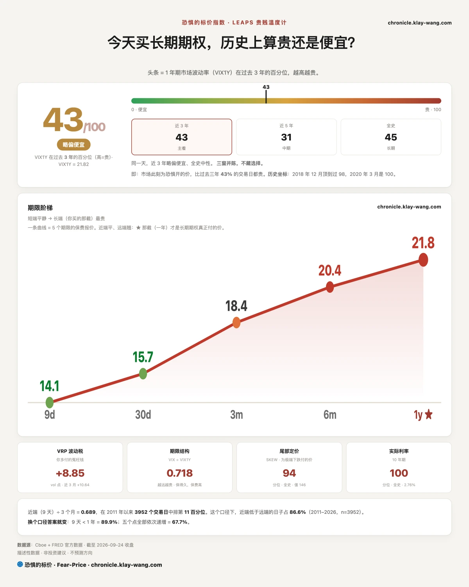
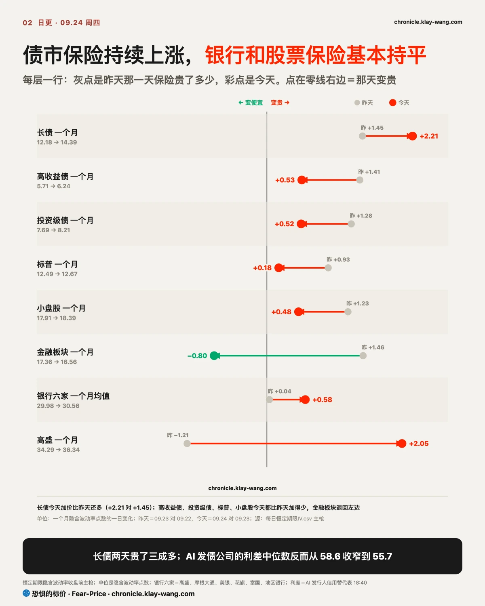
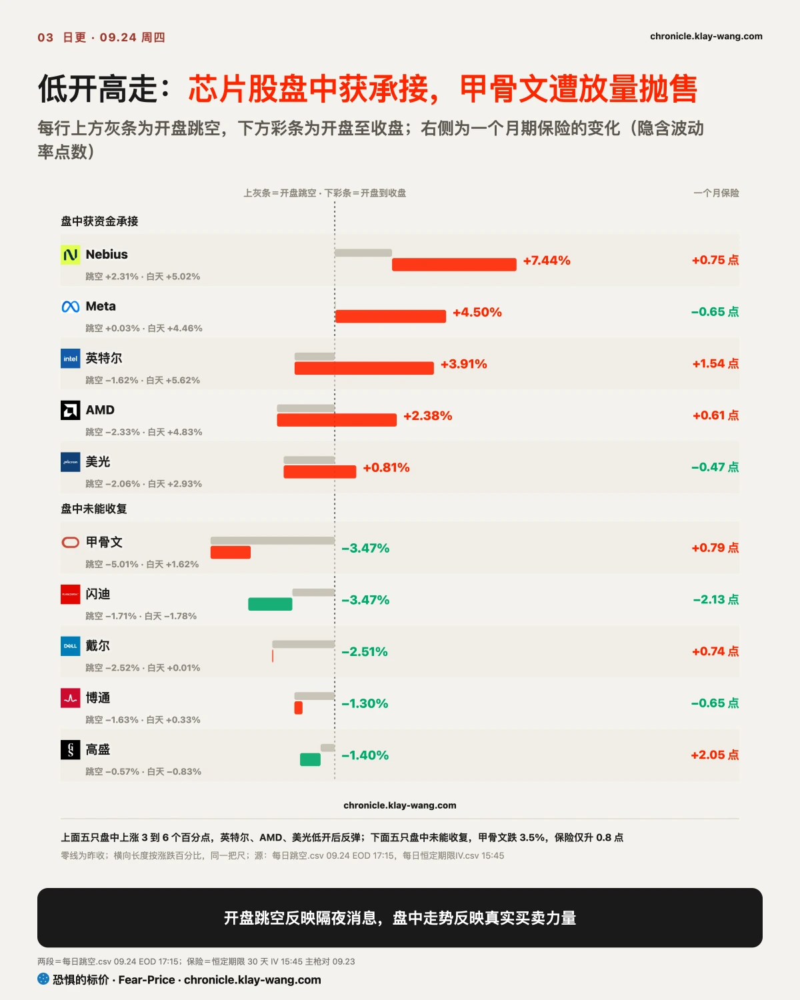
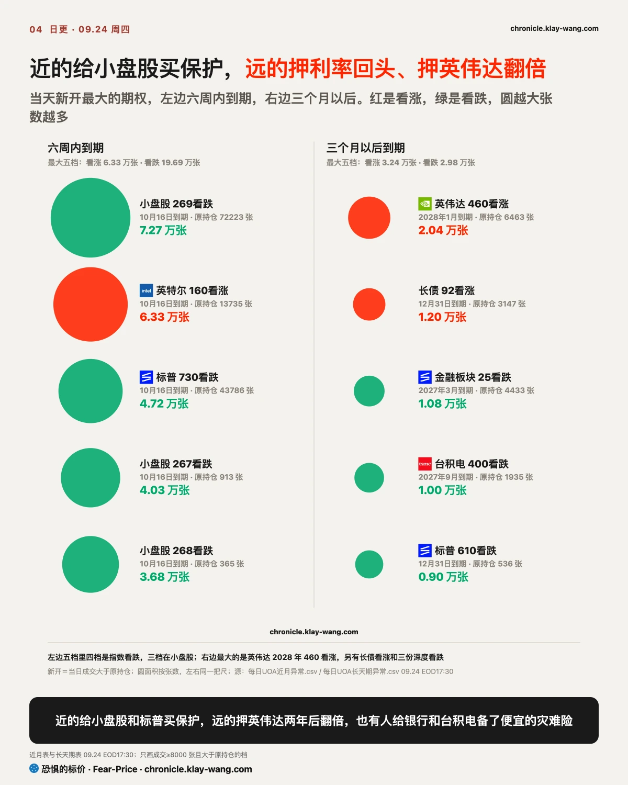

恐惧的标价指数（Fear-Price Index）· 2026-09-24 · 读数 43.3/100：一年期波动率 VIX1Y 为 21.82，处于近三年第 43.3 百分位，高即贵。逐日台账与口径 → chronicle.klay-wang.com · 转载注明：恐惧的标价指数 · Fear-Price
恐惧的标价指数由周三的 40.9 升至 43.3，一年期波动率 VIX1Y 从 21.69 微升至 21.82。涨价集中在近端：九天期波动率从 13.45 升至 14.11，一个月的 VIX 从 15.18 升至 15.67。长端利率创 2004 年以来新高的这一天，股票一年期保险几乎没有加价，说明市场并未把这轮利率上行当作会持续一年的风险。
K 指数 2.305，高于周三定稿的 2.144。它是 CNN 恐贪指数 36.1 除以 VIX 15.67，越接近 1，说明越多人把担忧落实到买保护上。按今天的恐贪读数，K 要跌破 1，VIX 需要升至 36 以上。历史在 chronicle.klay-wang.com/kindex，指数在 chronicle.klay-wang.com/fear-price。
十年期真实利率升至 2.76%，处于有数据以来全部历史的第 100 百分位，周三为 2.63%、第 98.9 百分位。真实利率是扣除通胀之后借钱的实际成本：存款利率 5%、物价涨 3%，实际多拿的只有 2%。这个成本今天创下有记录以来最高。
债市的加价更明显。MOVE 指数衡量市场为未来一个月国债价格波动支付的保险费，相当于债市的 VIX，前天为 79，周三 95，今天 105，两天上升三成多。对你来说，为股票组合配一年期保护，成本与周三相近；手里是长债的，保护成本已明显上升。

美国三十年期国债收益率周四升至 5.46%，创 2004 年以来新高，十年期收于 5.16%。几股力量同时推升利率，方向一致。
第一股来自美联储。纽约联储主席威廉姆斯表示，市场预期年底前再加息一次是合理的，理由是经济韧性强、就业下行风险减弱，AI 带来的需求仍在推高物价。同一天早盘公布的数据显示，上周首次申请失业救济人数为 19.7 万，低于预期的 20.1 万。首次申领人数少，说明劳动力市场仍然偏紧，美联储缺少暂停加息的理由。
第二股来自油价。伊朗方面称冲突可能扩大至印度洋，美伊谈判未见进展，布伦特原油站上 100 美元，美国原油基金收涨约 3%。油价是物价里最先变动的一块，它上涨会强化通胀难以回落的预期，市场随之加大加息押注。
第三股来自海外。日本十年期国债收益率升至 3% 以上，创 1996 年以来新高。日本央行上周加息后没有说明后续路径，日债随之遭到抛售。这对美债构成直接压力：日本资金在国内就能拿到更高利息，购买美国长债的动力随之减弱。美、日、澳长债当天同步下跌，这轮上行有一部分是全球长端一起重新定价。
下午的国债供给又加了一把力。7 年期国债拍卖中标收益率 5.085%，创该期限有记录以来最高，海外买家获配比例降到 2025 年 11 月以来最低，要给更高的利息才有人接。财政部同日回购 20 到 30 年期国债，只接受了上限的约七成，两周前接近九成。回购是财政部买回长债、给市场托底，这次托得比预期少，拍卖后三十年期收益率一度升至 5.49%。
长债基金当天下跌 1.3%，开盘仅低 0.1%，跌幅几乎全在盘中。
对普通人来说，影响分两头。房贷利率跟着十年期国债利率走，长端利率继续上行，新增房贷的月供还会上升；另一方面，存款、货币基金和短期国债的收益更高了，三个月期国债收益率升至 4.07%。借钱的人成本上升，手里有闲钱的人收益增加，这个趋势今天又往前推进了一步。

期权保险的价格由买保护的一方推高，谁的保险变贵，市场对谁的担忧就在上升。长债基金一个月期保险（隐含波动率）从周二的 10.73 升至 14.39，两天上涨三成多；高收益债和投资级债基金的保险也上涨 7% 到 9%。这两类基金装的是公司债，但保险上涨主要源于债价随国债利率波动：投资级债基金持仓期限更长，当天跌 0.7%，比高收益债跌得多。
判断公司本身是否承压，要看信用利差，也就是公司债比同期限国债多支付的利息，它代表债市对这家公司还钱能力的定价。14 家 AI 相关发债公司的利差中位数从 58.6 个基点收窄至 55.7 个基点，没有扩大。只有甲骨文扩大约 7 个基点，从 160 升至 167，与它数据中心延期的消息吻合，属于个别事件。
长债保险两天涨三成，公司利差却没扩，冲击仍停在利率。
银行板块同样平静。六家银行一个月期保险均值从 29.98 小幅升至 30.56，只有高盛单独上涨两个点。为股票买保护的价格更稳定，标普一个月期从 12.49 升至 12.67；为利率买保护的 MOVE 两天上涨三成多，两者差距持续扩大。
我的判断是，这轮冲击仍停留在利率，尚未传导到公司信用。如果 9 月 30 日前这 14 家公司的利差中位数升至 73.6 个基点以上（较周三扩大 15 个基点），或六家银行一个月期保险均值升破 32，这一判断就站不住：届时利率问题会转化为企业还不还得上钱的问题，股指也不会只是收平。你手里如果有公司债基金，眼下的波动主要来自国债利率，发债公司本身还没有出问题。

芯片股早盘的下跌在盘中被资金买回，甲骨文的下跌则来自真实卖盘。开盘价主要反映隔夜消息，成交量小；开盘后的走势才体现真实的买卖力量。周四多数个股低开，其中大部分盘中上涨。
芯片股盘中承接明显。英特尔开盘下跌 1.6%，盘中反弹 5.6%，收涨 3.9%，成交量为前一交易日的 1.4 倍。AMD 低开 2.3% 后盘中上涨 4.8%，美光低开 2.1% 后盘中上涨 2.9%，最终收红。早盘随利率上行的抛售，在盘中被资金重新买回，买盘强于卖盘。
Meta 的涨幅几乎全部来自盘中。它开盘基本持平，全天上涨 4.5%，收于 777.59，为三个月来最高收盘价；9 月以来累计上涨 36%，是 2013 年 7 月以来最大的单月涨幅。Connect 大会上，Meta 把 Muse 智能体接入眼镜、Mac 和邮箱，并与沃尔玛合作购物。
按一致预期，Meta 未来 12 个月市盈率约 21 倍，略低于纳指 100，估值不算贵；但分析师预计今年自由现金流会因 AI 投入转负。股价比 50 日均线高出两成以上，周三收盘价 744 附近是第一道支撑，明天那批会前看涨期权的结算，会检验这轮上涨有没有资金继续跟进。
甲骨文和闪迪盘中都没有收复失地，原因不同。甲骨文就新墨西哥州数据中心发出不可抗力通知，若项目延期，公司将寻求推迟付款。该股开盘跳空下跌 5%，盘中仅小幅回升，成交量为前一交易日的 2.5 倍，有资金在集中卖出。收盘价为 7 月 31 日以来最低，燃料电池供应商 Bloom Energy 也随之下跌。
不过，甲骨文的期权保险几乎没有上涨，一个月期隐含波动率仅从 48.5 升至 49.3，信用利差也只扩大约 7 个基点。留下的持有者并没有抢购保护，市场把这件事看作单个项目的延期，没有当成甲骨文整体 AI 布局出了问题。
闪迪下跌 3.5%，开盘低 1.7%，盘中再跌 1.8%，成交量与前一日基本持平；一个月期保险反而从 71.4 降至 69.3。与周三一样，股价下跌来自买盘撤退，卖方并不急于出货。美光 9 月 30 日公布的财报是这个板块的下一个关键节点。你手里的芯片股若明天跌回周四开盘价以下，今天的盘中反弹就站不住。

近端，一个多月内到期的看跌期权集中在小盘股。看跌期权相当于为下跌买的保险，今天小盘股看跌的成交量是看涨的四倍。小盘公司负债比例较高，利率上行时率先承压，担心利率的资金优先为它们买保护。当天新开两档 10 月 16 日到期、行权价比现价低约 5% 的看跌，各成交 3.7 万到 4 万张，此前持仓只有几百张。
周三那一档也有了结果：成交 8 万张，过夜结算后留下 7.2 万张，留存率 88.6%，判断成立。今天它又成交 72711 张，与现有持仓相当，是整批转手还是平仓重开，明早的持仓会给出答案。
远端，三个月以上到期的资金仍在押注利率回落。这一段里，长债基金看涨的成交量是看跌的四倍多，其中 2028 年 1 月到期的一档单日成交 1.8 万张。周三那四档远期长债看涨，今早留存率 93.5%，这一判断同样成立。利率冲到新高，押注它回落的仓位并没有撤。
远端另一笔大单来自英伟达。2028 年 1 月到期、行权价 460 美元的看涨期权单日成交 2 万张，此前持仓仅 6463 张。460 美元是现价的两倍多，押注的是该股在一年零四个月后翻倍。这笔交易出现在英伟达期权最便宜的时候。英伟达的期权一年里只有约 1% 的日子比现在便宜，隐含波动率也低于最近 30 天的实际波动。如果明早该档持仓的增量不到今天成交量的一半，这笔就主要是当天进出，长期建仓的说法站不住。
金融板块方向相反。2027 年到期的金融板块基金看跌期权，一档行权价比现价低约 27%，另一档低一半以上，分别成交 1.6 万张和 1.1 万张。这类深度价外看跌很便宜，相当于为银行业出现重大危机的情形投保。
你手里如果有小盘股或银行股，这些交易说明有资金正在为这类资产付费防险；手里有英伟达的，远端资金押注的是一年多以后的方向，与未来几周的涨跌关系不大。
今天收盘还结算了上周四的两项判断，均成立：半导体基金此后每天收盘都在 545.56 上方，金融板块基金始终没有回到 57。周三提到的谷歌 10 月 30 日到期看跌期权，1 万多张今早几乎全部留存。
手里有债券或债券基金的：长债保险两天上涨三成多，债基的波动目前来自利率，发债公司的利差没有扩大。需要重新评估的信号，是发债公司利差和银行保险同时上升，那说明冲击已经传到企业。
手里是指数基金的：指数收平，靠的是 Meta 和几只芯片股盘中反弹，底下的利率和油价都收在高位。现在补保护的成本，低于信用市场出问题之后。
手里有 AI 或芯片股的：今天明显分化。英特尔、AMD、美光、Meta 盘中获得买盘；甲骨文遭放量抛售，但只是单个项目延期；闪迪缩量下跌，要等美光 9 月 30 日的财报。
手里有小盘股的：今天保护需求最集中的就是小盘股。小盘公司负债比例高，利率再上一个台阶，它们会率先承压。